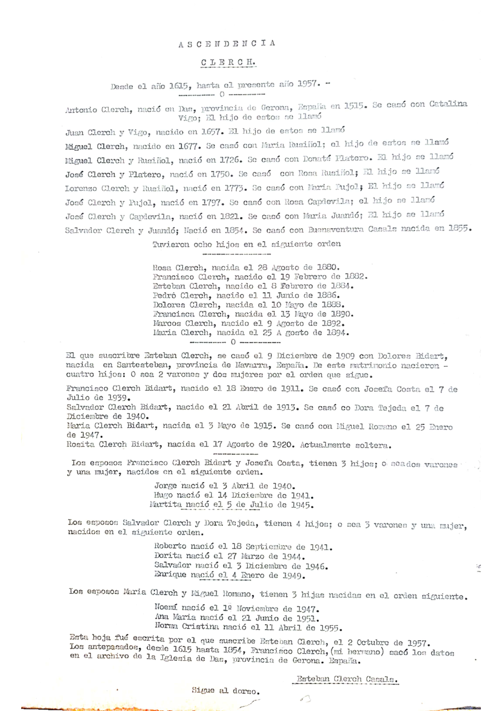
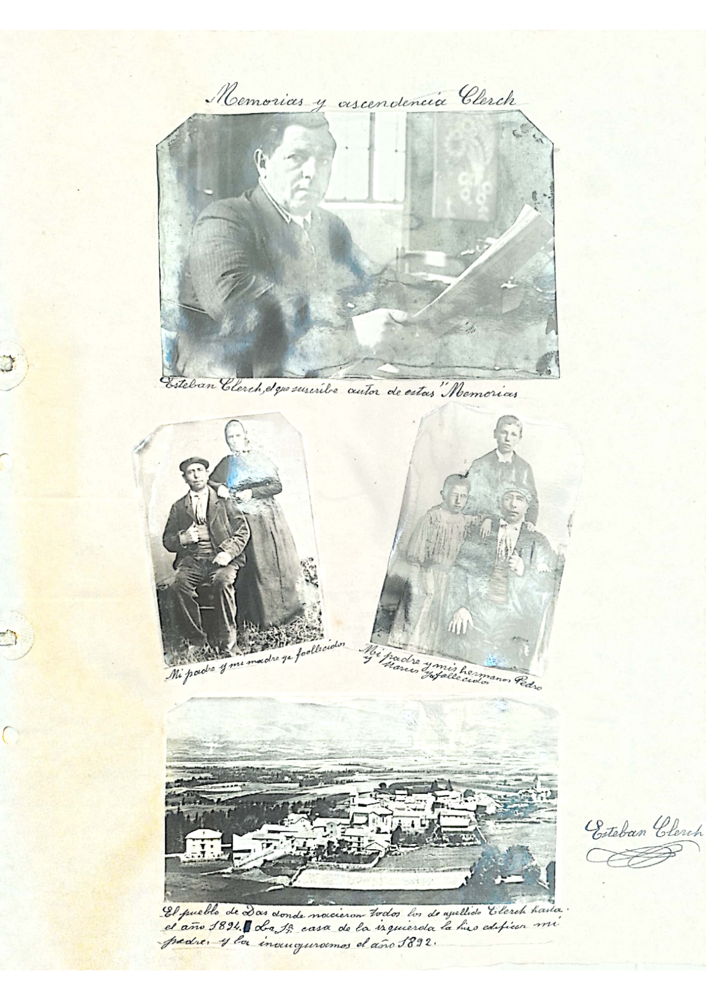
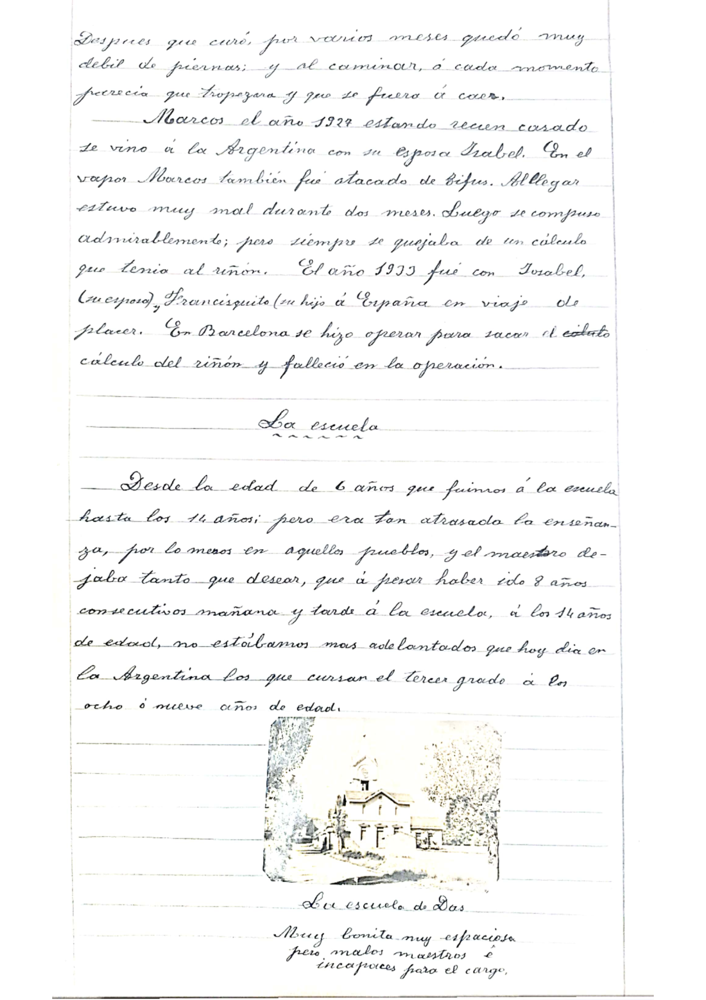
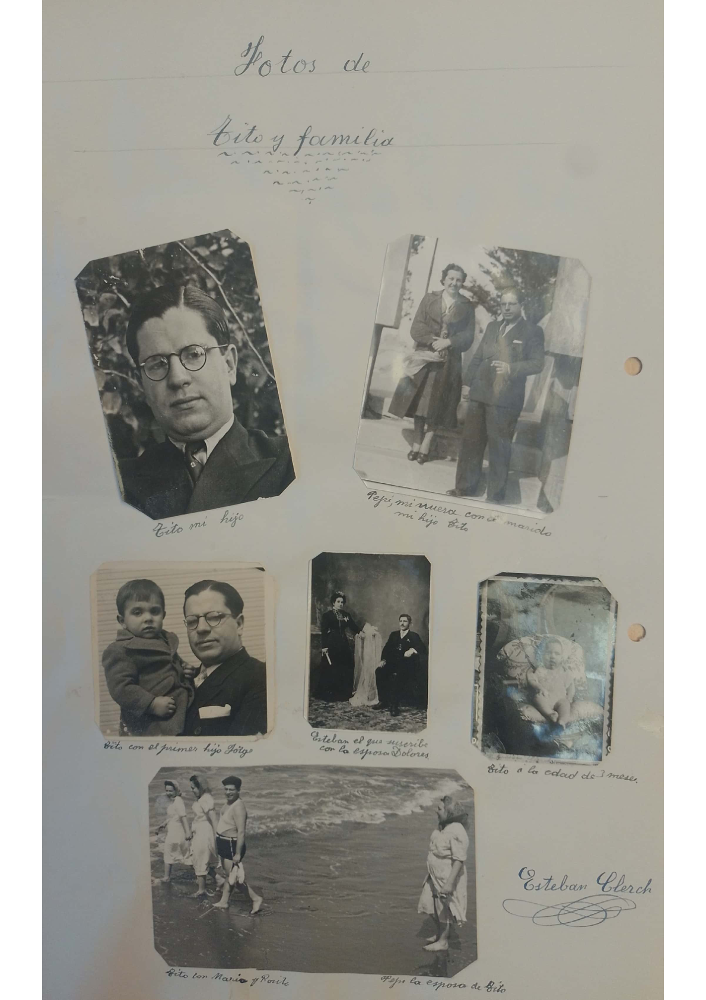
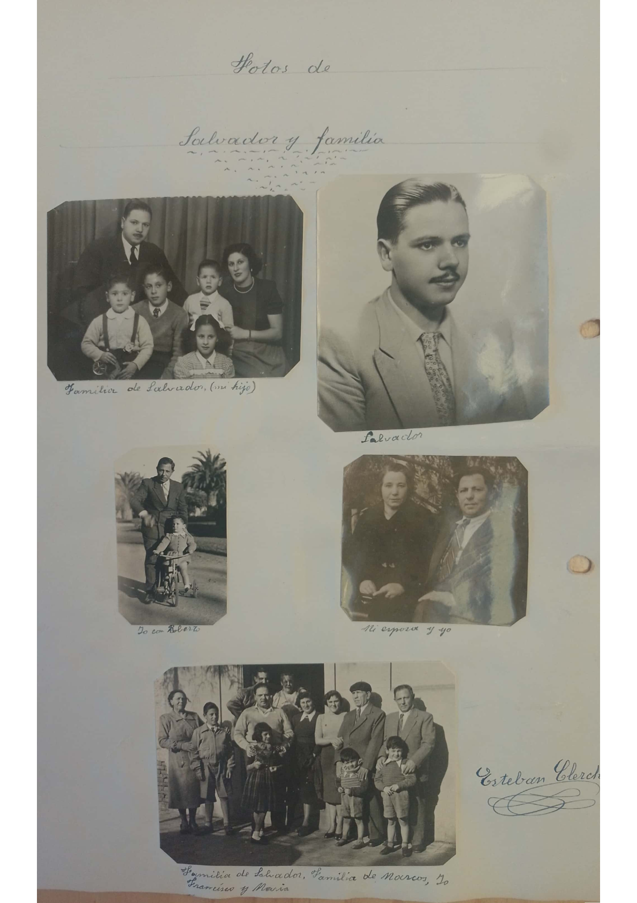
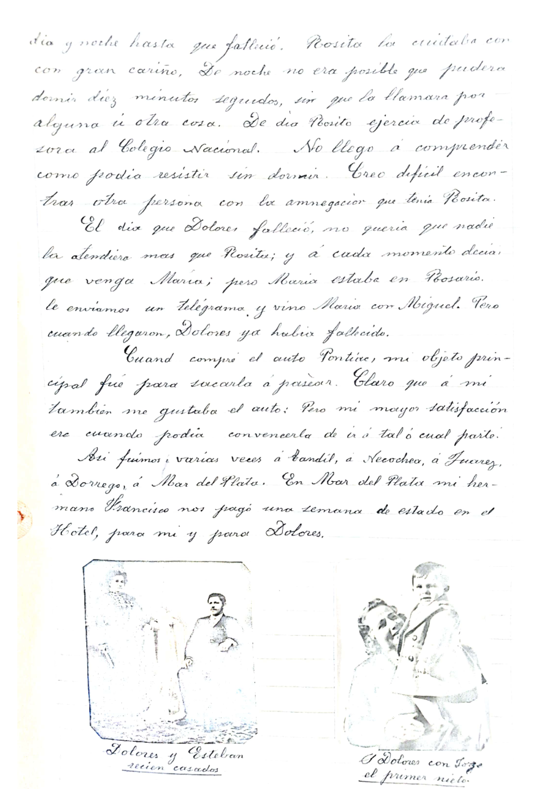
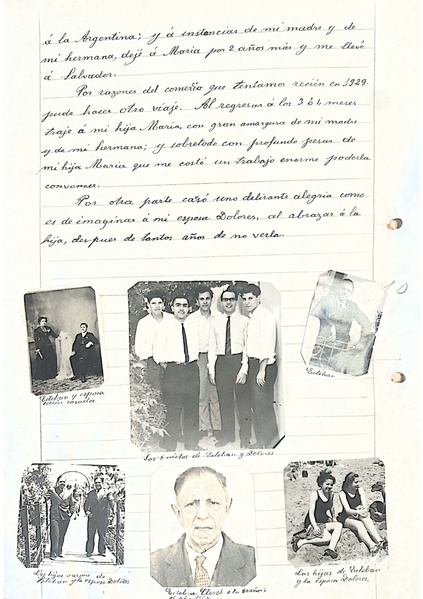

Memorias familiares · Das, 1884 — Tres Arroyos, 1957
Mis Memorias y Ascendencia Clerch
Escritas a grandes rasgos por Esteban Clerch Casals
Ascendencia Clerch
Desde el año 1615 hasta 1957. Datos extraÃdos del archivo de la Iglesia de Das, Gerona, España.
Linaje directo
- Antonio Clerch — nació en Das, Gerona, 1615. Casado con Catalina Vigo.
- Juan Clerch y Vigo — 1657.
- Miguel Clerch — 1677. Casado con MarÃa Rusiñol.
- Miguel Clerch y Rusiñol — 1726. Casado con Donata Platero.
- José Clerch y Platero — 1750. Casado con Rosa Rusiñol.
- Lorenzo Clerch y Rusiñol — 1773. Casado con MarÃa Pujol.
- José Clerch y Pujol — 1797. Casado con Rosa Capdevila.
- José Clerch y Capdevila — 1821. Casado con MarÃa Juandó.
- Salvador Clerch y Juandó — 1854. Casado con Buenaventura Casals (1855).
Hijos de Salvador y Buenaventura (8 hijos):
Esteban Clerch se casó el 9 de diciembre de 1909 con Dolores Bidart, de Santesteban, Navarra. Cuatro hijos:
- Francisco Clerch Bidart (Tito) — 18 ene 1911 · casado con Josefa Costa, 7 jul 1939
- Salvador Clerch Bidart — 21 abr 1913 · casado con Dora Tejeda, 7 dic 1940
- MarÃa Clerch Bidart — 3 may 1915 · casada con Miguel Romano, 25 ene 1947
- Rosita Clerch Bidart — 17 ago 1920 · soltera en 1957
Marcos Clerch casado con Isabel González — hijos: Francisco (1931) y Buenaventura Isabel (1933), casada con Nicolás Sabatini; hija Marina Sabatini Clerch (18 abr 1957).
Escrito por Esteban Clerch, 2 de octubre de 1957.
Algunos decesos
José Clerch Pujol (1797) — falleció 22 sep 1853 · José Clerch Capdevila (1821) — 12 jun 1893 · Salvador Clerch Juandó (1854) — 4 abr 1922 · Buenaventura Casals y Forcada (1855) — 7 nov 1942.
Todas las personas de apellido Clerch que figuran en este documento, desde 1615 hasta 1900, nacieron en Das, Gerona, España.

Das y la Cerdanya
El pueblo donde nació y creció la familia Clerch.
Nacà en Das, provincia de Gerona, España, el dÃa 8 de febrero de 1884.
El pueblo de Das solo cuenta con unas 50 viviendas. Está en un valle llamado Cerdanya, de unos 18 kilómetros de longitud por unos 15 de ancho; cuya llanura está rodeada por una blanca muralla de gigantescas montañas, en cuyo centro hay 25 pueblitos o aldeas, que oscilan entre 25 a 100 viviendas cada uno, y otro llamado Puigcerdà que tiene 500 viviendas.
Se goza de un panorama maravilloso si se contempla el valle desde cierta altura de la montaña. Desde ciertos sitios, sin moverse del lugar, la vista abarca casi a todos los pueblos y aldeas, debido a que están a muy poca distancia unos de otros.
Cada familia suele tener un campito muy chico, y como siembran cierta diversidad de cosas distintas, en primavera y el verano, si se contempla la llanura desde la montaña, parece un mosaico de diversos colores, o un tapiz con una colección de dibujos hermosÃsimos.

Infancia y familia
El recuerdo más remoto de que tengo memoria data del año 1887; o sea de cuando solo tenÃa tres años, al fallecer mi padrino (abuelo materno de mi padre). Recuerdo que al decirme que habÃa fallecido mi padrino, me puse a llorar desconsoladamente, diciendo que no querÃa que lo enterraran.
En el pueblo de Das nacimos todos los hermanos. Éramos 4 varones y 4 mujeres; 8 en total. Todos nos llevábamos 2 años de diferencia.
En mi infancia, la familia se componÃa del abuelo paterno José Clerch; mi padre Salvador Clerch; mi madre Buenaventura Casals y de los ocho hermanos.
El año 1893 falleció el abuelo José Clerch a edad de 71 años. El año 1895, a causa de una epidemia de tifus, en pocos dÃas fallecieron Rosa, Dolores y Francisco. El año 1906 falleció Pedro en Manresa, provincia de Barcelona, también de tifus. En 1907, MarÃa estuvo muy mal al estar atacada también de tifus. CreÃan que no se salvarÃa. Después que curó, por varios meses quedó muy débil de piernas.
Marcos, el año 1927, estando recién casado, se vino a la Argentina con su esposa Isabel. En el vapor Marcos también fue atacado de tifus. Al llegar estuvo muy mal durante dos meses. Luego se compuso admirablemente; pero siempre se quejaba de un cálculo que tenÃa al riñón. El año 1933 fue con Isabel y Francisquito a España en viaje de placer. En Barcelona se hizo operar para sacar el citado cálculo del riñón y falleció en la operación.
La escuela
Desde la edad de 6 años fuimos a la escuela hasta los 14; pero era tan atrasada la enseñanza, por lo menos en aquellos pueblos, y el maestro dejaba tanto que desear, que a pesar de haber ido 8 años consecutivos mañana y tarde a la escuela, a los 14 años de edad no estábamos más adelantados que hoy dÃa en la Argentina los que cursan el tercer grado a los ocho o nueve años de edad.

Barcelona (1899–1903)
El año 1899, salà por primera vez de Cerdanya para ir a trabajar en Barcelona. TenÃa 15 años. Salimos a las 6 de la mañana de Das. Fuimos a pie cruzando la montaña hasta Ribas, donde llegamos a las 12 del mediodÃa. Tomamos una tartana hasta Ripoll y de allà el tren para Barcelona, donde llegamos a las 8 de la noche.
Francisco hacÃa ya un año que estaba en Barcelona, en la Posada de San Antonio. Me dijo que en el Hotel Duval de la Rambla necesitaban un ayudante de cocina. Me pagaban 7 pesetas mensuales, pero tenÃa que dormir en un lavadero donde hacÃan hervir ropa con jabón y lejÃa desde las 4 a 5 de la mañana. A los 4 dÃas salÃ.
Al dÃa siguiente, la tÃa Margarita me dijo que en la calle Trafalgar Nº 4 necesitaban un lavaplatos — un restaurant frente del Arco del Triunfo. Me pagaban 10 pesetas por mes. El trabajo era muy pesado: de 8 a 10 de la mañana iba al mercado con una canasta de unos 50 kilos o más.
Un dÃa Francisco me dijo que tenÃa deseos de ir a Venezuela. Un buen dÃa me vino a ver y me dijo que habÃa sacado pasaje para Buenos Aires en el vapor Patricia de Satústregui. Era el año 1900. Francisco tenÃa 17 años; cumplió los 18 durante el viaje.
Yo fui a ocupar su puesto en la Posada de San Antonio como ayudante de mozo de comedor, con 8 pesetas mensuales y unas 5 o 6 de propina. Estuve 7 u 8 meses. Por intermedio de la Sociedad de Mozos y Cocineros, fui al Hotel Sol y Creu en Mataró — la casa que más me gustó.
Me embarqué el 2 de febrero de 1903 con el vapor Alfonso Trece para Buenos Aires. Desembarqué el 25 de febrero. El 8 de febrero cumplà los 17 años en el mar. Todo mi capital se componÃa de 5 pesos argentinos.
Vida en Argentina
La primera casa que trabajé en Buenos Aires fue una fábrica de masas en Corrientes 1050, con un sueldo de 30 pesos por mes. Todas las mañanas repartÃa masitas a varios bares con una bandeja de madera arriba de la cabeza.
En 1903 trabajé de cocinero en varios pueblos del interior y luego en la RotiserÃa Sportman de Florida — el mejor restaurant de Buenos Aires. HabÃa 15 cocineros y el jefe era de ParÃs. Trabajé de cocinero de noche en el Club del Progreso, Avenida de Mayo al 600. Los socios eran la aristocracia argentina. Preparaba un cocktail San MartÃn para el Dr. Estrada, un chocolate bien espeso para el Dr. Sáenz Peña, y a veces un bife a caballo con papas fritas.
En 1906 Francisco fue a España; falleció Pedro en Manresa. En 1908 fui a España 3 meses. En 1909 fui de primer cocinero al Hotel Francés de Tandil. Me casé con Dolores Bidart el 9 de diciembre de ese año.
En 1911 nació Tito (Francisco Clerch Bidart) en Tandil. Nos mudamos a Buenos Aires, donde Francisco tenÃa el Bar El Globo en Salta y Victoria (hoy Hipólito Irigoyen).
A últimos de 1912 fui a Salto, donde nació Salvador. Luego a JunÃn, donde puse un restaurant que vendà pronto. En 1913 puse un Bar y Billares en el Azul, que tuve hasta 1918.
En 1918 fui con Dolores, Fito, Salvador y MarÃa a España. Dejamos a Salvador y MarÃa con mi madre. El 4 de abril de 1922 falleció mi padre. No pude volver a España hasta 1925, cuando fui a Francia y Alemania a comprar mercaderÃas.
En 1925 traje a Salvador; dejé a MarÃa dos años más. En 1929 pude hacer otro viaje y traje a MarÃa, con gran alegrÃa de Dolores y profundo pesar de mi madre.
Las Antillas — Tres Arroyos
El año 1919 fui a Tres Arroyos. HabÃa un local en Colón 284 — una zapaterÃa que se trasladaba. Esperamos 2 meses y lo alquilamos. Pusimos venta de cafés tostados de Los Mandarines y caramelos y bombones.
Yo siempre tenÃa la idea de tostar nosotros los cafés. A los 2 años le escribà a Francisco en Buenos Aires. Compró una tostadora norteamericana de 5.000 pesos. Empezamos a tostar con buen éxito y pusimos por nombre Las Antillas. Allà nació Rosita el 17 de agosto de 1920.
En 1922 el propietario quiso edificar y me trasladé a Colón 520 — un local de 10 metros de frente por 14 de fondo, con 2 grandes vidrieras. Invité a Francisco como socio y agregamos Bazar, LibrerÃa, JugueterÃa, PerfumerÃa, etc. Llegamos a tener 12 empleados.
Todos los meses enviábamos a Marcos en España lo que le correspondÃa como socio, y para todos los gastos de la familia en Das y Barcelona.
Propuse a la madre que pasara los inviernos en Barcelona con Marcos, MarÃa (hermana) y mi hija MarÃa. Tras mucho insistir, aceptó. Se alquiló un piso y pasaron los inviernos muy contentos.
Marcos al casarse en 1927 volvió a la Argentina. En 1933 fue a España y falleció en Barcelona tras una operación al riñón. Isabel volvió; Francisquito quedó en España con mi madre y mi hermana.
En 1936 vino la revolución española. El gobierno argentino limitó los giros. En 1942 falleció la madre, a los 87 años. En 1947 vinieron Francisquito y Mario de España.
El año 1945, a raÃz de circunstancias polÃticas, se notaba decadencia en el negocio. En 1949 tuve un ataque de presión con pérdida de memoria. En 1950, por indicación de mi hijo Tito, vino el señor Goycoa y mediante una indemnización convencional le cedimos el local con un plazo de 3 meses para liquidar.
La familia en España
Durante la guerra civil y la guerra europea, las cosas empeoraron. No dejaban enviar encomiendas de más de 10 kilos. HacÃamos todo lo humanamente posible para enviar ayuda a la familia en España.
Al finalizar la guerra, MarÃa en todas las cartas se quejaba por la falta de vÃveres. En 1947 escribimos a Mario para que viniera a la Argentina. Francisquito se incorporó a Las Antillas; luego eligió el Molino Americano y estudió Comercial nocturno en el Colegio Nacional.
Tito — Francisco Clerch Bidart
Cuando tenÃa 3 meses se hernió de la ingle y del ombligo. Lo operaron en el Hospital de Niños con éxito. A los 6 años empezó la escuela particular. Cometà el error de hacerle estudiar 4º y 5º grado en un solo año, y 6º grado y 1º año Nacional también en un solo año.
Para el 5º año Nacional lo mandé al Colegio Mariano Moreno de Buenos Aires. Se recibió de bachiller, estudió ingenierÃa, dejó y estudió Comercial. Puso una Academia Comercial en Tres Arroyos con mucho éxito.
Se casó con Josefa Costa el 7 de julio de 1939. Tres hijos: Jorge (3 abr 1940), Hugo (14 dic 1941), Marta (5 jul 1945). Jorge sigue con la Academia. Tito reside en Buenos Aires con otra Academia en Santa Fe 3495 y un departamento en Beruti 3489.

Salvador Clerch Bidart
Cuando tenÃa 2 años se hernió de la ingle. Lo llevé a Buenos Aires y lo operaron en el Hospital de Niños con éxito. De chico fue de carácter muy tranquilo y alegre.
Los años en España lo retrasaron en la escuela. Al regresar a los 12 años lo pusieron en 2º grado. Estudió arquitectura en Rosario. Se casó con Dora Tejeda el 4 de diciembre de 1940. Cuatro hijos: Roberto (1941), Dorita (1944), Salvador (1946), Enrique (1949).
Estuvo en Las Antillas y vendÃa máquinas Hermes. Luego puso una Academia Comercial en Necochea.

MarÃa Clerch Bidart
De carácter suelto y atractivo. La hice preparar con maestras particulares e ingresar a la Escuela Normal de Rosario. Se recibió de maestra. Se casó con Miguel Romano en Rosario el 25 de enero de 1947. Tres hijas: Noemà (1947), Ana MarÃa (1951), Normita (1955). Residen en Rosario donde ejerce la docencia.
A MarÃa y Rosita les hicimos estudiar piano — un Zimmerman. Estudiaron 2 a 3 años y luego vendà el piano.
Rosita Clerch Bidart
De los cuatro hermanos, es la que hizo los estudios con más regularidad. Cursó el Bachillerato y los cuatro años de Profesorado en FÃsica y Matemáticas en la Universidad de La Plata. Muy estimada por profesores y profesoras.
Durante la enfermedad de Dolores la cuidó siempre con gran cariño, dÃa y noche sin descanso, ejerciendo además de profesora en el Colegio Nacional.
Dolores — mi esposa
Acostumbrada a trabajar desde la más tierna edad, era muy buena y muy laboriosa. A veces, como buena vasca navarra, no entendÃa de razones, pero le pasaba pronto. Siempre fue muy buena y leal.
A los hijos los crió a todos dándoles el pecho. Apenas se resfriaban, los cuidaba con gran cariño. Sufrió mucho: varices en cada embarazo, operación de matriz. Falleció de cáncer tras meses de sufrimiento terrible.
Cuando compré el auto Pontiac, mi objeto principal fue sacarla a pasear. Fuimos varias veces a Tandil, Necochea, Juárez, Dorrego, Mar del Plata. Francisco nos pagó una semana de hotel en Mar del Plata.
El dÃa que Dolores falleció, no querÃa que nadie la atendiera más que Rosita, y a cada rato decÃa: «Que venga MarÃa». Le enviamos un telegrama; cuando llegaron MarÃa y Miguel, Dolores ya habÃa fallecido.

Francisco — mi hermano
En todo momento fue muy bueno con toda la familia. En 1927 propuso hacer donación a nuestra hermana MarÃa de la parte que nos pudiera tocar en España. Cuando mis hijos sacaban útiles del negocio, nunca se los cobraba.
Durante varios años pasaba casi todos los veranos en España. Tras la revolución española ya no fue. Pasó inviernos en el norte: Paraguay (1938), Posadas (1939), Corrientes y Resistencia (1940–1942).
No tenÃa visión para los negocios. Le dije que comprara el edificio de Las Antillas y la esquina de Colón — tardó tanto que el precio subió. Por suerte compró la esquina; de lo contrario tendrÃa los 45.000 pesos desvalorizados en el banco.
MarÃa — mi hermana
MarÃa siempre fue la ayuda de la familia. Primero cuidó al padre, luego a la madre y a Marcos, y actualmente cuida muy bien a Francisco.
En 1947 vino de España. Francisco edificó en Brandzen 107 y fueron a vivir allÃ. En 1952 Mario y yo fuimos a España a vender las propiedades a nombre de MarÃa. Con el producto se compró un departamento en Necochea donde pasan diciembre Francisco y MarÃa.
Bar El Globo
El Bar y Restaurante El Globo fue inaugurado en 1908. Actualmente se encuentra en actividad y está incluido en el circuito para turismo extranjero. Conserva su estilo original y la cocina es sumamente elaborada, sobre todo el famoso puchero. Está ubicado en la esquina de Hipólito Yrigoyen y Salta, Buenos Aires.
Ya en 1911 el propietario fue Francisco Clerch, hermano del autor de estas memorias.
FotografÃas familiares
Retratos y lugares de la Cerdanya y la familia Clerch.
Página dedicada a MarÃa y Rosita: Rosita mi hija · MarÃa mi hija · MarÃa mi hermana · Esteban y Dolores, esposos · Mi padre y mi madre · Mis hijas y mi esposa.
Francisco y MarÃa: Francisco mi hermano · Pedro mi hermano (fallecido) · Marcos con Francisquito · Mi madre, Marcos, Mario y MarÃa.
Lugares: Paisaje del valle de la Cerdanya · Casa paterna en Das · Puigcerdá (Isabel Clerch y Nicolás Sabatini).

Nota familiar — 4 de octubre de 1957
En el año 1900 Francisco vino a la Argentina. Yo vine en 1903. Marcos vino en 1910. En 1933 Marcos viajó a Barcelona para operarse y falleció. Isabel volvió; MarÃa con Francisquito vinieron en 1947.
Actualmente los tres hermanos MarÃa, Francisco y yo residimos en Tres Arroyos.
Mi hijo Francisco (Tito) reside con su esposa e hijos en Tres Arroyos y Buenos Aires, con Academias Comerciales prestigiosas. Salvador reside en Necochea con Academia Comercial y fotografÃa artÃstica. MarÃa reside en Rosario con su esposo e hijas, ambos maestros. Rosa (Rosita) es profesora de FÃsica y Matemáticas en el Colegio Nacional de Tres Arroyos.
Los hijos de Marcos: Francisco Ramón Clerch González, estudia Arquitectura en Buenos Aires. Buenaventura Isabel Clerch González reside en Tres Arroyos con su esposo e hijos, ambos docentes.
— Esteban Clerch Casals, Tres Arroyos, 4 de octubre de 1957
Páginas originales
Escaneo completo del manuscrito (52 páginas). Clic para ampliar.